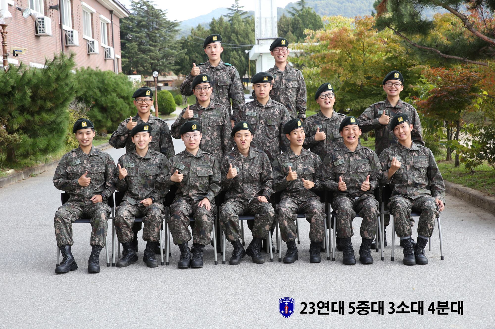

입대부터 지금까지..
| 17. 09. 14 | [입소] 23연대 5중대 3소대 | |
|---|---|---|
| 17. 10. 12 | [수료] 꿈만 같았던. 수료식 | |
| [입교] 경찰학교 1091기 | ||
| [진급] 이경 | ||
| 17. 11. 01 | [수료] 경찰학교 1091 | |
| [전입] 제 4기동단 41중대 | ||
| 18. 01. 01 | [진급] 일경 | |
| 18. 05. 24 | [전입] 제 2기동단 715중대 | |
| [소속] 서울지방경찰청 112 종합상황실 | ||
| 18. 08. 01 | [진급] 상경 | |
| 19. 03. 01 | [진급] 수경 | |
| 19. 05. 25 | [전역] 사회 속으로 | |